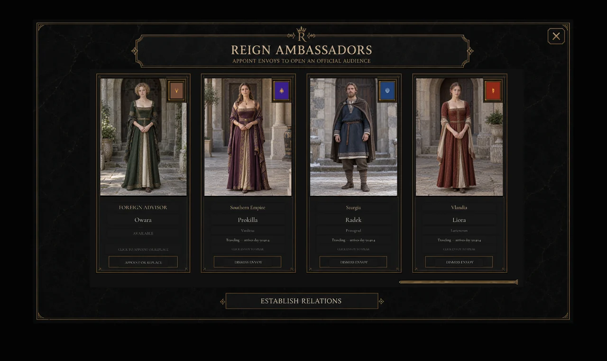
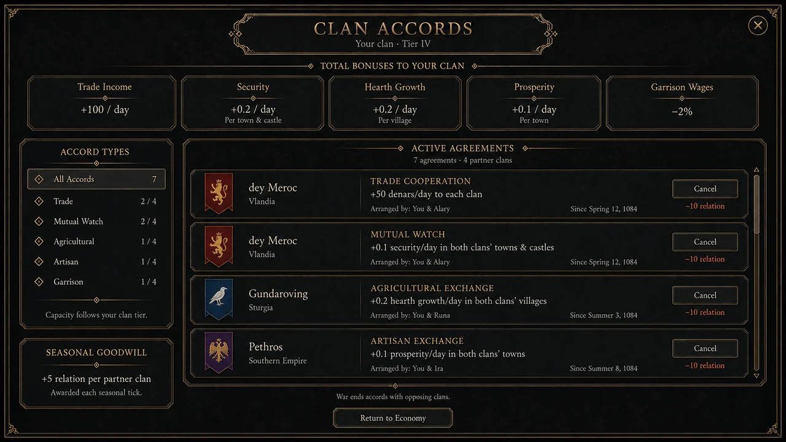

Mount & Blade II: Bannerlord · Reign
Diplomacy, ambassadors, and Clan Accords
Negotiate with the right authority, appoint ambassadors, and manage Clan Accords.
Development guide · November 24, 2026 · Edition notes
Talking to the right authority
Preview included#Rulers can negotiate war, peace, tribute, and longer agreements. NPC rulers also pursue their own policies according to personality, relationships, domestic pressures, current wars, and realm condition. You are not the only person capable of making the map change.
A courtier can discuss an alliance without having power to grant it. An ambassador can negotiate only within their actual mandate. Ask who can decide, agree on the exact terms, and inspect the resulting agreement or native change.
Use Alt+A in an eligible conversation to build a supported diplomatic action. For a written approach, open Correspondence with Ctrl+M, select the contact, then use Alt+A when the letter composer is ready.
Turning Enable Ruler-Driven NPC Diplomacy off also lifts Reign's special restrictions on ordinary native war and peace proposals. Use MCM → Bannerlord Reign → Execution → Execute Diplomacy Actions to control whether supported Reign diplomacy can take effect.
Political Pressure reflects friction or cooperation between realms and domestic lords. It can lead to peace, aid, trade, threats, or war. A ruler choosing foreign friendship may disappoint domestic supporters; supporting an angry noble faction may damage foreign relations.
What agreements can do
Preview included#Supported diplomacy includes ordinary and tribute peace, reparations, settlement concessions, surrender, trade, non-aggression, alliances, defensive pacts, independence guarantees, prisoner exchanges, ransoms, hostage guarantees, border restraint, caravan protection, supply, loans or subsidies, paid neutrality, paid war entry, and dependent political arrangements.
Compound packages can link several terms. Review who pays, who gives up territory or prisoners, which enemy is named, the duration, and whether it is public. Some arrangements directly alter Bannerlord state; others record obligations enforced when relevant events occur. A promise of supplies is not an already completed shipment.
An incompatible war can break treaties and damage trust. Peace does not necessarily recreate an agreement that ended. Temporary Truce and Trade Embargo are retired legacy action names; use the supported alternatives instead of assuming those old labels execute.
Outbound and resident ambassadors
Preview included#From Court's Ambassadors area, post an eligible ambassador, assign supported information, relations, or trade work, and recall them when appropriate. Postings occupy limited capacity and persist over time.
A resident foreign envoy comes from another peaceful ruler to your capital. They travel, arrive, and reside there rather than appearing instantly. Capital movement can relocate the posting; war can recall it. An envoy's conversation and authority can pass to a successor without wiping the state's diplomatic history.
An official envoy cannot grant something outside their charter, regardless of how persuasive you are. Refer an unauthorized request to the foreign ruler. Distinguish an ambassador's personal feelings from the terms they can officially approve.

Clan Accords
Preview included#Clan Accords are smaller cooperative arrangements between the player ruler's clan and an NPC clan. They are not kingdom treaties. A lesser eligible adult noble can arrange an accord for their clan through explicit agreement; it does not always require the clan leader to negotiate personally.
Use Alt+A in the ready conversation to find the supported Clan Accord action. Escape closes the Clan Accords management screen.
| Accord | Practical benefit |
|---|---|
| Trade cooperation | A modest continuing income benefit |
| Mutual Watch | Better security in owned towns and castles |
| Agricultural exchange | Help with village household growth |
| Artisan exchange | Help with town prosperity |
| Garrison cooperation | Lower garrison wage burden |
Available slots grow with clan tier separately for each accord type. Benefits can stack, and a valid accord can begin helping new holdings acquired later. Review capacities, partners, arrangers, and benefits through the Economy entry beside the campaign date and its Clan Accords screen.
Peaceful allegiance changes or an arranger's death need not end an accord. War with the partner's faction or clan elimination ends incompatible arrangements. Voluntary cancellation can hurt relationships; wartime termination has different rules. Peace afterward does not automatically sign them again.
Accords can build goodwill but do not grant votes, military authority, or Spymaster access. Mutual Watch is cooperation, not a hidden unlimited intelligence-report service.
